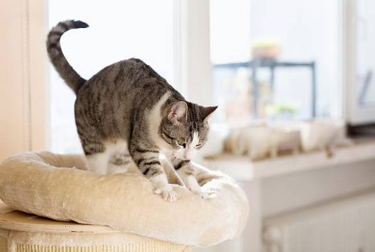

Aqui tienes preguntas frecuentes sobre los gatos :
-
¿Para qué sirven los bigotes de los gatos?
Táctil: Los bigotes son altamente sensibles y están conectados a terminaciones nerviosas profundas. Esto permite a los gatos detectar cambios en el entorno y sentir objetos cercanos sin necesidad de tocarlos directamente.
Navegación: Los bigotes ayudan a los gatos a evaluar el ancho de los espacios y determinar si pueden pasar a través de ellos. Esto es esencial para evitar que se queden atascados en lugares estrechos.
Comunicación emocional: Los gatos también utilizan sus bigotes para expresar emociones. Cuando los bigotes están hacia adelante, por ejemplo, puede indicar que el gato está curioso o emocionado. Si están hacia atrás, podría significar que el gato está asustado o molesto. -
¿Por qué mi gato amasa con las patas?
Comfort y seguridad: Aunque los gatos continúan amasando incluso en la edad adulta, este comportamiento se asocia con la sensación de confort y seguridad. Puede ser una forma de expresar relajación y bienestar.
Marcaje de territorio: Amasar también puede ser una forma de marcar territorio, ya que las glándulas de las patas liberan feromonas, ayudando al gato a establecer su presencia y sentirse más seguro en su entorno.
ábito adquirido: Algunos gatos mantienen este hábito como una respuesta a situaciones estresantes o simplemente como una actividad placentera.

-

¿Por qué mi gato araña muebles y cómo puedo evitarlo?
Cuando los gatos arañan muebles, están siguiendo un comportamiento natural para marcar territorio, afilar sus garras y estirarse. Para evitar este comportamiento no deseado, puedes seguir estos pasos:
Proporcionar rascadores: Ofrece rascadores adecuados y atractivos para tu gato. Pueden ser postes de sisal, tablas de cartón corrugado u otros materiales que satisfagan su necesidad de arañar.
Cubiertas protectoras para muebles: Considera el uso de fundas o cubiertas protectoras para los muebles más afectados. Esto proporciona una barrera física y protege tus muebles mientras trabajas en modificar el comportamiento de tu gato. -
¿Cómo sé si mi gato está enfermo?
Cambios en la actividad: Aumento o disminución significativa en la actividad y energía.
Vómitos o diarrea persistentes: Problemas gastrointestinales frecuentes o prolongados.
Tos o estornudos persistentes: Problemas respiratorios que persisten en el tiempo.
Si observas alguno de estos signos, es importante llevar a tu gato al veterinario para un diagnóstico y tratamiento adecuados. Los cambios en el comportamiento o la apariencia pueden indicar problemas de salud que requieren atención profesional. -
¿Necesito cepillar el pelaje de mi gato aunque sea de pelo corto?
Sí, es recomendable cepillar el pelaje de un gato, incluso si tiene pelo corto. El cepillado ayuda a eliminar el pelo suelto, reduce la formación de bolas de pelo y promueve una piel y pelaje saludables. Además, puede ser una experiencia de unión entre el dueño y el gato.
Tips:
- Utiliza un cepillo adecuado para gatos de pelo corto.
- Establece una rutina de cepillado regular para acostumbrar al gato desde temprano.
- Cepilla en la dirección del crecimiento del pelaje para evitar molestias.
- Sé suave y paciente, especialmente si es la primera vez que cepillas a tu gato.